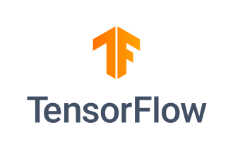
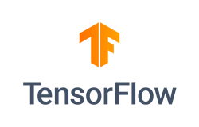

TensorFlow
Source: https://en.wikipedia.org/wiki/TensorFlow
Category: products_cloud_and_ai
Depth: 1
Summary
TensorFlow is a software library for machine learning and artificial intelligence. It can be used across a range of tasks, but is used mainly for training and inference of neural networks. It is one of the most popular deep learning frameworks, alongside others such as PyTorch. It is free and open-source software released under the Apache License 2.0.
Images


Full Article
Machine learning software library
TensorFlow is a software library for machine learning and artificial intelligence. It can be used across a range of tasks, but is used mainly for training and inference of neural networks. It is one of the most popular deep learning frameworks, alongside others such as PyTorch. It is free and open-source software released under the Apache License 2.0.
It was developed by the Google Brain team for Google's internal use in research and production. The initial version was released under the Apache License 2.0 in 2015. Google released an updated version, TensorFlow 2.0, in September 2019.
TensorFlow can be used in a wide variety of programming languages, including Python, JavaScript, C++, and Java, facilitating its use in a range of applications in many sectors.
History
DistBelief
Starting in 2011, Google Brain built DistBelief as a proprietary machine learning system based on deep learning neural networks. Its use grew rapidly across diverse Alphabet companies in both research and commercial applications. Google assigned multiple computer scientists, including Jeff Dean, to simplify and refactor the codebase of DistBelief into a faster, more robust application-grade library, which became TensorFlow. In 2009, the team, led by Geoffrey Hinton, had implemented generalized backpropagation and other improvements, which allowed generation of neural networks with substantially higher accuracy, for instance a 25% reduction in errors in speech recognition.
TensorFlow
TensorFlow is Google Brain's second-generation system. Version 1.0.0 was released on February 11, 2017. While the reference implementation runs on single devices, TensorFlow can run on multiple CPUs and GPUs (with optional CUDA and SYCL extensions for general-purpose computing on graphics processing units). TensorFlow is available on 64-bit Linux, macOS, Windows, and mobile computing platforms including Android and iOS.
Its flexible architecture allows for easy deployment of computation across a variety of platforms (CPUs, GPUs, TPUs), and from desktops to clusters of servers to mobile and edge devices.
TensorFlow computations are expressed as stateful dataflow graphs. The name TensorFlow derives from the operations that such neural networks perform on multidimensional data arrays, which are referred to as tensors. During the Google I/O Conference in June 2016, Jeff Dean stated that 1,500 repositories on GitHub mentioned TensorFlow, of which only 5 were from Google.
In March 2018, Google announced TensorFlow.js version 1.0 for machine learning in JavaScript.
In Jan 2019, Google announced TensorFlow 2.0. It became officially available in September 2019.
In May 2019, Google announced TensorFlow Graphics for deep learning in computer graphics.
Tensor processing unit (TPU)
Main article: Tensor processing unit
In May 2016, Google announced its Tensor processing unit (TPU), an application-specific integrated circuit (ASIC, a hardware chip) built specifically for machine learning and tailored for TensorFlow. A TPU is a programmable AI accelerator designed to provide high throughput of low-precision arithmetic (e.g., 8-bit), and oriented toward using or running models rather than training them. Google announced they had been running TPUs inside their data centers for more than a year, and had found them to deliver an order of magnitude better-optimized performance per watt for machine learning.
In May 2017, Google announced the second-generation, as well as the availability of the TPUs in Google Compute Engine. The second-generation TPUs deliver up to 180 teraflops of performance, and when organized into clusters of 64 TPUs, provide up to 11.5 petaflops.[citation needed]
In May 2018, Google announced the third-generation TPUs delivering up to 420 teraflops of performance and 128 GB high bandwidth memory (HBM). Cloud TPU v3 Pods offer 100+ petaflops of performance and 32 TB HBM.
In February 2018, Google announced that they were making TPUs available in beta on the Google Cloud Platform.
Edge TPU
In July 2018, the Edge TPU was announced. Edge TPU is Google's purpose-built ASIC chip designed to run TensorFlow Lite machine learning (ML) models on small client computing devices such as smartphones known as edge computing.
TensorFlow Lite
In May 2017, Google announced TensorFlow Lite as a software stack to support machine learning models for mobile and embedded devices, and in November 2017, provided the developer preview. In January 2019, the TensorFlow team released a developer preview of the mobile GPU inference engine with OpenGL ES 3.1 Compute Shaders on Android devices and Metal Compute Shaders on iOS devices. In May 2019, Google announced that their TensorFlow Lite Micro (also known as TensorFlow Lite for Microcontrollers) and ARM's uTensor would be merging. It was renamed as LiteRT in 2024.
TensorFlow 2.0
As TensorFlow's market share among research papers was declining to the advantage of PyTorch, the TensorFlow Team announced a release of a new major version of the library in September 2019. TensorFlow 2.0 introduced many changes, the most significant being TensorFlow eager, which changed the automatic differentiation scheme from the static computational graph to the "Define-by-Run" scheme originally made popular by Chainer and later PyTorch. Other major changes included removal of old libraries, cross-compatibility between trained models on different versions of TensorFlow, and significant improvements to the performance on GPU.
Features
AutoDifferentiation
AutoDifferentiation is the process of automatically calculating the gradient vector of a model with respect to each of its parameters. With this feature, TensorFlow can automatically compute the gradients for the parameters in a model, which is useful to algorithms such as backpropagation which require gradients to optimize performance. To do so, the framework must keep track of the order of operations done to the input Tensors in a model, and then compute the gradients with respect to the appropriate parameters.
Eager execution
TensorFlow includes an "eager execution" mode, which means that operations are evaluated immediately as opposed to being added to a computational graph which is executed later. Code executed eagerly can be examined step-by step-through a debugger, since data is augmented at each line of code rather than later in a computational graph. This execution paradigm is considered to be easier to debug because of its step by step transparency.
Distribute
In both eager and graph executions, TensorFlow provides an API for distributing computation across multiple devices with various distribution strategies. This distributed computing can often speed up the execution of training and evaluating of TensorFlow models and is a common practice in the field of AI.
Losses
To train and assess models, TensorFlow provides a set of loss functions (also known as cost functions). Some popular examples include mean squared error (MSE) and binary cross entropy (BCE).
Metrics
In order to assess the performance of machine learning models, TensorFlow gives API access to commonly used metrics. Examples include various accuracy metrics (binary, categorical, sparse categorical) along with other metrics such as Precision, Recall, and Intersection-over-Union (IoU).
TF.nn
TensorFlow.nn is a module for executing primitive neural network operations on models. Some of these operations include variations of convolutions (1/2/3D, Atrous, depthwise), activation functions (Softmax, RELU, GELU, Sigmoid, etc.) and their variations, and other operations (max-pooling, bias-add, etc.).
Optimizers
TensorFlow offers a set of optimizers for training neural networks, including ADAM, ADAGRAD, and Stochastic Gradient Descent (SGD). When training a model, different optimizers offer different modes of parameter tuning, often affecting a model's convergence and performance.
Usage and extensions
TensorFlow
TensorFlow serves as a core platform and library for machine learning. TensorFlow's APIs use Keras to allow users to make their own machine-learning models. In addition to building and training their model, TensorFlow can also help load the data to train the model, and deploy it using TensorFlow Serving.
TensorFlow provides a stable Python Application Program Interface (API), as well as APIs without backwards compatibility guarantee for JavaScript, C++, and Java. Third-party language binding packages are also available for C#, Haskell, Julia, MATLAB, Object Pascal, R, Scala, Rust, OCaml, and Crystal. Bindings that are now archived and unsupported include Go and Swift.
TensorFlow.js
TensorFlow also has a library for machine learning in JavaScript. Using the provided JavaScript APIs, TensorFlow.js allows users to use either Tensorflow.js models or converted models from TensorFlow or TFLite, retrain the given models, and run on the web.
LiteRT
LiteRT, formerly known as TensorFlow Lite, has APIs for mobile apps or embedded devices to generate and deploy TensorFlow models. These models are compressed and optimized in order to be more efficient and have a higher performance on smaller capacity devices.
LiteRT uses FlatBuffers as the data serialization format for network models, eschewing the Protocol Buffers format used by standard TensorFlow models.
TFX
TensorFlow Extended (abbrev. TFX) provides numerous components to perform all the operations needed for end-to-end production. Components include loading, validating, and transforming data, tuning, training, and evaluating the machine learning model, and pushing the model itself into production.
Integrations
Numpy
Numpy is one of the most popular Python data libraries, and TensorFlow offers integration and compatibility with its data structures. Numpy NDarrays, the library's native datatype, are automatically converted to TensorFlow Tensors in TF operations; the same is also true vice versa. This allows for the two libraries to work in unison without requiring the user to write explicit data conversions. Moreover, the integration extends to memory optimization by having TF Tensors share the underlying memory representations of Numpy NDarrays whenever possible.
Extensions
TensorFlow also offers a variety of libraries and extensions to advance and extend the models and methods used. For example, TensorFlow Recommenders and TensorFlow Graphics are libraries for their respective functional. Other add-ons, libraries, and frameworks include TensorFlow Model Optimization, TensorFlow Probability, TensorFlow Quantum, and TensorFlow Decision Forests.
Google Colab
Google also released Collaboratory, a TensorFlow Jupyter notebook environment that does not require any setup. It runs on Google Cloud and allows users free access to GPUs and the ability to store and share notebooks on Google Drive.
Google JAX
Main article: Google JAX
Google JAX is a machine learning framework for transforming numerical functions. It is described as bringing together a modified version of autograd (automatic obtaining of the gradient function through differentiation of a function) and TensorFlow's XLA (Accelerated Linear Algebra). It is designed to follow the structure and workflow of NumPy as closely as possible and works with TensorFlow as well as other frameworks such as PyTorch. The primary functions of JAX are:
- grad: automatic differentiation
- jit: compilation
- vmap: auto-vectorization
- pmap: SPMD programming
Applications
Medical
GE Healthcare used TensorFlow to increase the speed and accuracy of MRIs in identifying specific body parts. Google used TensorFlow to create DermAssist, a free mobile application that allows users to take pictures of their skin and identify potential health complications. Sinovation Ventures used TensorFlow to identify and classify eye diseases from optical coherence tomography (OCT) scans.
Social media
Twitter implemented TensorFlow to rank tweets by importance for a given user, and changed their platform to show tweets in order of this ranking. Previously, tweets were simply shown in reverse chronological order. The photo sharing app VSCO used TensorFlow to help suggest custom filters for photos.
Search Engine
Google officially released RankBrain on October 26, 2015, backed by TensorFlow.
Education
InSpace, a virtual learning platform, used TensorFlow to filter out toxic chat messages in classrooms. Liulishuo, an online English learning platform, utilized TensorFlow to create an adaptive curriculum for each student. TensorFlow was used to assess the current abilities of students and also helped decide which content to show based on those capabilities.
Retail
The e-commerce platform Carousell used TensorFlow to provide personalized recommendations for customers. The cosmetics company ModiFace used TensorFlow to create an augmented reality experience for customers to test various shades of make-up on their face.
Research
TensorFlow is the foundation for the automated image-captioning software DeepDream.
See also
References
Further reading
- Moroney, Laurence (October 1, 2020). AI and Machine Learning for Coders (1st ed.). O'Reilly Media. p. 365. ISBN 9781492078197. Archived from the original on June 7, 2021. Retrieved December 21, 2020.
- Géron, Aurélien (October 15, 2019). Hands-On Machine Learning with Scikit-Learn, Keras, and TensorFlow (2nd ed.). O'Reilly Media. p. 856. ISBN 9781492032632. Archived from the original on May 1, 2021. Retrieved November 25, 2019.
- Ramsundar, Bharath; Zadeh, Reza Bosagh (March 23, 2018). TensorFlow for Deep Learning (1st ed.). O'Reilly Media. p. 256. ISBN 9781491980446. Archived from the original on June 7, 2021. Retrieved November 25, 2019.
- Hope, Tom; Resheff, Yehezkel S.; Lieder, Itay (August 27, 2017). Learning TensorFlow: A Guide to Building Deep Learning Systems (1st ed.). O'Reilly Media. p. 242. ISBN 9781491978504. Archived from the original on March 8, 2021. Retrieved November 25, 2019.
- Shukla, Nishant (February 12, 2018). Machine Learning with TensorFlow (1st ed.). Manning Publications. p. 272. ISBN 9781617293870.
External links
| - v - t - e Google AI | |
|---|---|
| - Google - Google Brain - Google DeepMind | |
| Computer programs | |
| Machine learning | |
| Generative AI | |
| See also | - "Attention Is All You Need" - Future of Go Summit - Generative pre-trained transformer - Google Labs - Google Pixel - Google Workspace - Robot Constitution |
| - Category - Commons |
| - v - t - e Deep learning software | |
|---|---|
| - Comparison | |
| Open source | - Apache MXNet - Apache SINGA - Caffe - Deeplearning4j - DeepSpeed - Dlib - Keras - Microsoft Cognitive Toolkit - ML.NET - OpenNN - PyTorch - TensorFlow - Theano - Torch - ONNX - OpenVINO - MindSpore |
| Proprietary | - Apple Core ML - IBM Watson - Neural Designer - Wolfram Mathematica - MATLAB Deep Learning Toolbox |
| - Category |
| - v - t - e Differentiable computing | |
|---|---|
| General | - Differentiable programming - Information geometry - Statistical manifold - Automatic differentiation - Neuromorphic computing - Pattern recognition - Ricci calculus - Computational learning theory - Inductive bias |
| Hardware | - IPU - TPU - VPU - Memristor - SpiNNaker |
| Software libraries | - TensorFlow - PyTorch - Keras - scikit-learn - Theano - JAX - Flux.jl - MindSpore |
| - Portals - Computer programming - Technology |
| - v - t - e Google free and open-source software | |
|---|---|
| Software | |
| Related | - Code-in - Google LLC v. Oracle America, Inc. - Open Source Security Foundation - Summer of Code |